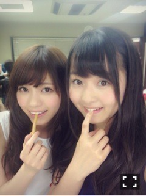
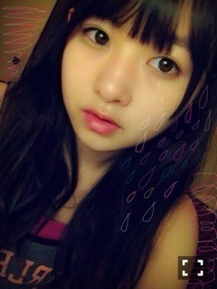

| 2013/05 25 Sat | 431回目*marika |
日焼け止めを肌に染み込ませました。
危うくびちょびちょに
なるところでした。
こんばんは

今日は撮影でした。
遅くなったけど、美雲！
お誕生日おめでとう

美雲といっぱい話したいなあー
そしてなあちゃん！
お誕生日おめでとう
なあちゃんのウェーブヘアーとカラー
めっちゃすきなんですよ！
ふあふあなんですよもう。

なあちゃんお菓子食べるまりか爪噛む
*********
 まりっかは将来的に
まりっかは将来的に
欲しい資格とか免許とかある？
 資格っていっぱいあるよね。
資格っていっぱいあるよね。
きものとか自然とか？
車の免許はいつか取りたいです！
パンケーキとホットケーキの
違いって何？
パンケーキって
パンなの？ケーキなの？(´・c_・`)
あー一緒一緒！
些細なことは気にしないない。
昨日の服の趣味合う子って誰？
クラスメイト♪
質問が採用されるかどうかは、
質問してから何更新くらいが
目安になりますか？
前回のブログコメント
自分が読んでいるときに
反映されたものから
ピックアップしてます。
この夏に注目してる
アイテム等はあるかな？
ロンパースとかセットアップ！
全員白コーデとか。
まりおは彼女がいたら
何をしてあげるんじゃい？？
守ってあげる！
最近メンバーがblogにのっけてる
右下にマークがついてる写真って
なんかのアプリなの？？
押したら拡大して画質良いよー
っていうマークだよたぶん

**********
この前、サロペットと
花柄パンツとポーチ買いました。
サロペットは見た瞬間
ビビビッときました。かわいいのよー
今度載せるねー


メイク落とした顔。
アイライン落ち切ってない顔。
明日全員で撮影あるーうわーい
まりか
コメント(257)
2013/05/25 23:54